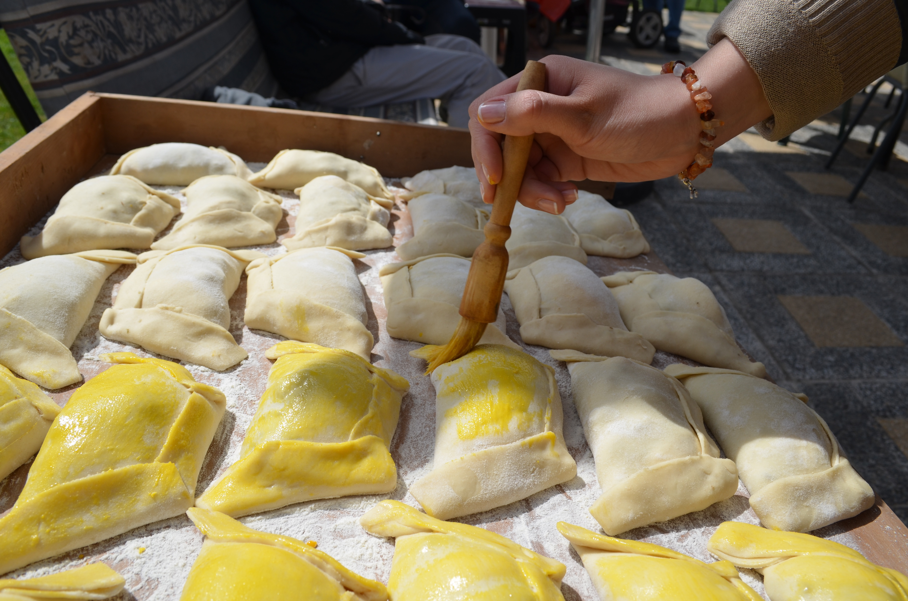

Encuéntranos
C/ Santisteban Márquez
Abrir en el mapaNos encantará recibirte. Si tienes una consulta, llámanos o escríbenos.
C/ Santisteban Márquez
Abrir en el mapa¿Tienes alguna pregunta? Estamos al otro lado.
607 98 76 54Cuéntanos qué necesitas y te responderemos.
Enviar un correo
Panadería de Marco representa una tradición familiar transmitida durante cinco generaciones.
Con más de 130 años de historia, seguimos trabajando para ofrecer productos de calidad elaborados con dedicación.
Más de 3.000 clientes cada mes.